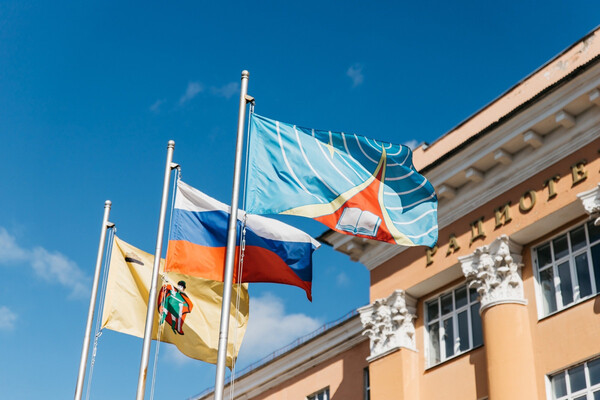
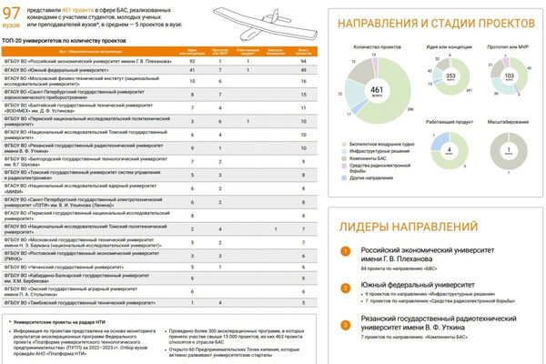
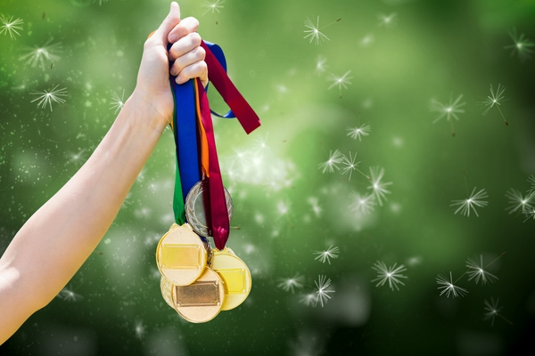

НОВОСТИ
Студенты РГРТУ стали победителями Всероссийской олимпиады «Я — профессионал»
Студенты РГРТУ стали победителями Всероссийской олимпиады «Я — профессионал». Об этом сообщает пресс-служба вуза. В 2024 году РГРТУ в предметном треке престижной олимпиады представляли 4 студента факультета электроники. В категории «бакалавриат» в медальном зачете Кирилл Глазунов получил «золото», «бронза» у Ильи Молодцова, а Владислав Жижин отмечен дипломом победителя. Среди магистрантов дипломом призера отмечен Андрей Евстропов. «Я — профессионал» — крупнейшая всероссийская студенческая олимпиада, организаторами которой являются Минобрнауки России, Президентская платформа «Россия — страна возможностей» компания «Яндекс» и Российский союз промышленников и предпринимателей. В 2024 году состоялся VII сезон олимпиады, общее число участников всех конкурсных треков составило около 850 тысяч. Подробнее на RZN.info
РГРТУ вошел в ТОП-лидеров отрасли беспилотных авиационных систем
Платформа Национальной технологической инициативы представила свежий дайджест «Проекты отрасли БАС на Радаре НТИ», сформированный по итогам реализации вузовских акселерационных программ в рамках проекта «Платформа университетского технологического предпринимательства». Рязанский радиотехнический университет вошел в ТОП-лидеров отрасли по направлению «Компоненты БАС», также вуз занял 8 место в топ-20 университетов, представив семь проектов в соответствующем направлении. «Расширение участия РГРТУ в национальном проекте БАС — одно из приоритетных направлений в нашей будущей стратегии. На фоне успехов региона в сфере „беспилотия“, связанных с деятельностью ИНТЦ „Аэрокосмическая инновационная долина“ и созданием одного из первых в России научно-производственных центров БАС „Протос“, Рязанский радиотехнический университет должен эффективно решать задачи кадрового обеспечения новой отрасли и расширять спектр проводимых научных исследований и инженерных изысканий в данной предметной области. Подробнее на RZN.info
Круглый стол "Проблемы и перспективы развития телекоммуникационных сетей"
В Бизнес-инкубаторе РГРТУ 26 апреля 2024 года состоится круглый стол "Проблемы и перспективы развития телекоммуникационных сетей". Ожидаются приглашенные гости, представители ведущих профильных компаний региона: АО «Рязанский Радиозавод», ПАО «МТС». DLink, Рязанский филиал ООО «Т2 Мобайл», ООО «Лаборатория Сфера», Рязанский РО ЦФ ПАО «МегаФон», НПП «Тепловодохран», ПАО «Ростелеком».
Приглашаем студентов и сотрудников принять участие в обсуждении!
Первенство области по лыжероллерам
12 июня состоялось первенство области по лыжероллерам. Студент группы 315 Максим Моренко стал победителем на дистанции 1 километр.
13 июня в г.Ростове-на-Дону состоялся Чемпионат России по плаванию на открытой воде в категории «Мастерс». Старший преподаватель кафедры физического воспитания мастер спорта России по плаванию Юрий Попов завоевал серебряную медаль на дистанции 2 500 метров в возрастной категории 40-44 года.
Поздравляем каждого с высокими результатами и желаем успехов
в профессиональной деятельности и спортивной сфере!